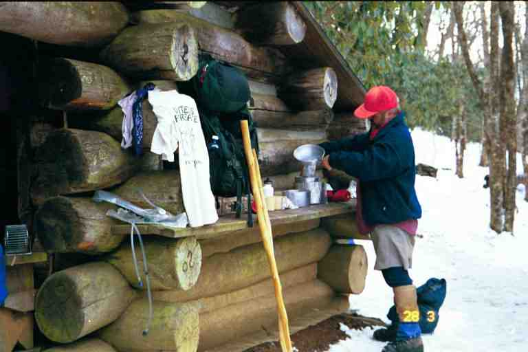
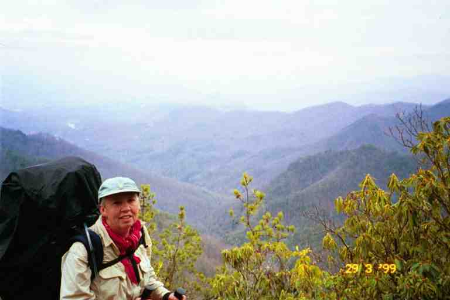

Our vacation at Rainbow Springs Campground was over. We headed back up the trail. It was a beautiful sunny day with thick heavy snow clinging to the branches. A really pretty site that reminded us of ideal cross country skiing weather back home. We had been preceded up the trail by some of our bunk mates and by some hikers who had spent the night at Rock Gap shelter. Their passage had made a foot wide trench in the deep snow. There was over a foot of snow and we simply walked in the trench. We did not look for blazes; we assumed that those in front had done so. The first section was three miles to US 64 at Winding Stair Gap. The elevation rose gently by 700 feet and dropped sharply by 700 feet as it came down to the road.
Highway 64 crosses the mountains and proceeds down to Franklin NC to the east. The road and the parking lot at this spot were plowed and the road was drying. EAGLE, FALCON and KAYBEK had hiked 4 miles to this spot the previous morning during the storm. It is a wide open area and they stood here for nearly an hour exposed to the elements in a driving snow storm. There was very little traffic coming up the mountain because of the storm and they started to get worried. Fortunately they all managed to get a ride.
After a light snack, we crossed the road and went back into the woods. As the day progressed, it got warmer and the walking got sloppier. We were walking in a slushy trench along the side of a mountain and our feet were getting wet. Four miles past the road we came to a side trail leading half a mile to Siler Bald shelter, our destination for the night. The blue blazed trail to the shelter contoured a mountain, dipped to cross a stream and headed up a little rise to the shelter. It was still early in the afternoon but there was already a group here.
Five people had taken possession of the shelter spots. Everyone was hanging around the covered eating/cooking area in the front of the shelter. We sat down and removed our boots and placed them in the sun. Our wet socks joined a collection of wet hiker clothes draped over the railing. We met CANEBREAK (a retired juvenile court judge from Georgia), XENA (a young man of 19 who had taken the Warrior Princess's name for some reason) and XENA's father JED (named because of supposed resemblance to Jed Clampett). JED was accompanying his son for a short section of his thru hike. XENA carried a cloth chess board rolled up in his pack and full sized chess pieces. There were also a number of other hikers here.
MICHIGAN MAN and ELF showed up but decided to spend the night up on Siler's Bald, as they had heard that the view was spectacular. After a short stay, they backtracked down the blue blaze trail. Balds are mountain tops without trees. They are exposed to the elements and can get very windy. I personally would not want to be there in this kind of weather.
We were soon joined by BADGER and SUNDOG who had spent the night in a motel in Franklin during the storm. After a while the conversation turned to the amount of shelter space. BADGER was of the opinion that there was room for six maybe even seven people in the shelter. Thru hikers always accommodated as many as possible, especially in inclement weather. The problem was that most people here were not thru hikers.
CANEBREAK had a spot in the shelter. XENA and SUNDOG said they would sleep either on the picnic table, the bench along the cooking area or at people's feet at the edge of the shelter. This did not seem like a good option to us as these spots would be exposed, and already we could feel a cool wind coming up the valley, as the sun was hiding behind the mountain. Late in the afternoon, BADGER went quietly into the shelter, slid everyone's stuff, and made himself a spot.
JED decided to set up his tent to the right of the shelter out towards the back. We decided to do the same. We cleared an area as best we could and placed some large garbage bags on the snow to stop the humidity and cold, as we did not carry a ground sheet. We then set up our tent on top of the bags. I went down to the stream and filtered water for our supper and for tomorrow.
After supper, MA got hit with a problem. We are not sure what caused it but we wondered if it was Buddy's chili. Luckily we had set up camp not too far from a ravine that was used as toilet facilities. There was no outhouse at this shelter.
The next morning was bitter cold. I made a hot oatmeal breakfast and then we packed our stuff, freezing our hands in the process. We headed down the trail, MA still not feeling in great shape. We did not backtrack to get back to the trail. Instead, we continued for half a mile or so on the blue blaze trail to where it rejoined the AT. This was our first blue blazing and we justified it by the fact that the total distance on this trail was actually longer than the section of the AT that we would be missing. However, the god of the thru hiking purists punished us. The last part of the trail was a steep climb out of the valley on an old cart track. The hill never seemed to stop and the snow did not make it any easier.
It was another sunny day. Again we walked in a trench in the snow made by hikers in front of us. We were passed by many hikers and late morning had a break with PACE. In the afternoon the trail turned slushy. There were many bare spots on the sections of trail on the south side of the mountains. It was in one of these areas that we were passed by Ryan, Erin and their dog Sky. We caught up to them soon after, sitting, taking a break on a small grassy area.
As we continued, we found ourselves back in the snow. At the end of this 12 mile day we came to our destination, Cold Spring shelter. It was an old shelter. The trail went right by the side of the shelter which was situated in a little flat area on the side of the hill.. There was a spring coming out of the side of the mountain right in front of the shelter. The shelter was full with thru hikers and section hikers. There was very little place to set up a tent because of the location. A couple of section hikers had found a little spot at the back of the shelter. We decided to set up in a little depression near the front of the shelter. JED passed us his ground sheet to try to keep our tent off the dirty ground. MICHIGAN MAN, ELF, IRMO AND LITTLE DIPPER went a short distance further and found a flat spot just off the trail in the snow.

The attached picture shows me making supper on the cooking shelf on the side of the shelter. Note my attire from head to toe: hunter orange cap, red bandanna, fleece jacket, nylon shirt sticking out, shorts, blue long johns, blue and beige gaiters and hiking boots. This is where I learned how not to cook Ramen noodles (also called Mr. Noodles or Mandarin noodles). We decided to start with Ramen noodles before our Lipton meal because they would be ready in 3 minutes after adding to boiling water. I emptied two ramen packages into the boiling water. When ready, I tried to pour some noodles into each of our cups. The noodles were long and wanted to come out of the pot in one lump. There was no way I could separate them. Finally MA came over and helped me cut them as they dangled from the pan. What a mess! From then on I followed the advice of some other hikers. Smash the content of the package into small pieces before opening and pouring into the water.
The next morning we found that the heat of our bodies had turned the ground beneath our tent to mud. The stains on our tent would remain for the rest of the trip. After breakfast, we went into the shelter to pack our bags in a dry spot. As I prepared to pick up my pack I noticed a puddle of water under it. I emptied the top part of my pack to get at my Platypus.
__________________
A little explanation is required. Most hikers carry their water in one-liter Nalgene bottles. They carry one or two of these wide mouthed screw top bottles and fill one or both in the morning depending on the upcoming water sources. The mouth of the bottles allows portable water filters to be attached directly, thus easy filling. These hikers normally stop when thirsty to take a drink of water or wait until break.
Some of us carried what is called a hydration system. It consists of a bag made of heavy plastic, with a tube leading from it and a special bite-valve in the end of the tube. The bag is filled with water and placed in or on the back pack. One end of the tube is attached to a screw cap which is screwed onto the bag and the other end of the tube is clipped to the straps of the pack. The hiker drinks by biting the bite-valve. This system allows you to drink without stopping. We found that we drank less using this system. Because we were always sipping, we never felt thirsty. However, some felt that they would drink more if they always had access to water. The bags come in a number of sizes. We each had a two-liter Platypus brand. We placed the bags in our backpack in a compartment close to our backs, with the screw cap pointing downward for easier flow. Because our packs were full, the water bags were difficult to remove without removing part of the contents of the packs. For this reason, we completely filled the platypus in the morning, and we generally had sufficient water for the day. The empty platypus bags are on the left end of the cooking shelf in the first picture.
Oh, and we each carried a half liter biker's bottle with Gatorade, which we drank for energy during breaks.
Now back to the story
_____________________________
I removed the Platypus from my pack and noticed that it was dripping near the screw cap. There seemed to be a leak in the seam of the bag. I surmised that it was likely caused by the pressure on the bag from the tight constraints in the back pack. To alleviate the problem on a temporary basis, I returned the platypus to the pack but with the screw cap and the leaky seam pointing upwards. It was a little more effort getting water all day because I had to suck a little. The day's hiking was relatively uneventful except for the elevation changes. We started at 5000 feet dropped quickly to 3900 feet, rose to 4600 and then dropped down to our destination, NOC, at the 1700 foot level. As we descended, we slowly came out of the snow. The final descent was quite brutal on the legs and knees. The attached picture was taken at Jumpup Lookout at the 4000 foot mark. Note the water tube coming over MA's shoulder and that the weather is now warm enough to walk without a jacket.

Rufus Morgan Shelter is situated 0.8 miles before NOC and 400 feet above it.. We stopped there to talk to IRMO and LITTLE DIPPER and a couple who were about our age called TO PACK and UNPACK. They got their names because when they came to serious climbs, he would hike to the top, remove his pack and go down and carry hers up for her. They would never get to Maine this way. IRMO and LITTLE DIPPER were camping near the shelter but would be coming down to the restaurant at NOC for supper. BADGER and SUNDOG would be staying here for the night and would be down in the morning to meet BADGER's grandparents, who were coming to pick him up for a day or two.
When we got down to the road, we had arrived at NOC, the Nantahala Outdoor Center. It is a large complex which specializes in outdoor adventure. They have a kayaking facility right there in the rapids on the Nantahala river, where the US Olympic team trains. There are also white water rafting expeditions. There are restaurants and an outfitter on site. It also offers a bunk house and motel rooms.
The registration for accommodations was in a building right along the road. We found the price a little expensive ($45), considering there was no TV (there was no reception in this deep valley). However, we decided we needed the comfort after our experiences over the last few days. While we were there, ELF arrived to obtain a place in the bunk house. She was standing in the office with her backpack on, when for some reason her pants fell down. Like the gentleman that I am, I pulled them up for her.
The office gave us a map and instructions on how to get to our room: Cross the road (watch for cars speeding around the mountain curves), go between the restaurant and the outfitter, cross the footbridge over the river, cross the parking lot, climb the stairs, cross the railroad tracks, take the trail and climb the hill to the road, walk up the road and go to the third building. We found we had a cozy little room with a bed, a sink and a loft above, and a washroom across the hall. We emptied our packs and spread our wet stuff in the loft and over the railing of the tiny three by three verandah. We were soon visited by our neighbours EAGLE and FALCON, who introduced us to their four roommates: RAINDANCER, M&M (Mind over Matter), and a couple named BLUEBERRY and SOULMAN. This would be the last time we saw EAGLE (but we heard some wonderful things which I will discuss later), and the first encounter of a long relationship with RAINDANCER.
We showered and literally watched the brown water pour off us and go down the drain. After a relaxing supper at the restaurant, we returned to our room, where we decided we needed our first zero mile day. The next morning we went down to the restaurant for breakfast and then went over and reserved the room for another night, despite the cost. We would have supper again that night and breakfast the following morning in the restaurant. The menu was not that big because this was the off-season, but it was nice to be spoiled.
We shared meals with some old and new hiker friends during our NOC stay. We learned that IRMO and LITTLE DIPPER were hiking the trail prior to settling down and starting a family. We learned that ELF was living a lie. She read us a letter she had just received from her mother who was inquiring how her group was doing. ELF explained that in order to stop her mother from worrying, she had told her that she was hiking with an organized group. Mothers always worry I guess. ELF was 39 years old. She told her mother that the group was doing great. We had breakfast with PACE and would not see him again for more than three months.
We approached an older couple waiting outside the restaurant in a van, and found out that they were BADGER's grandparents. They bragged about their wonderful grandson and I spoke highly of him to them and made them proud. I said that he should be coming down the mountain soon but that he had a tendency to sleep in. They were not surprised. When BADGER arrived I embarrassed him by repeating some of his grandfather's childhood stories about him. This was the last time we would see BADGER. He would be behind us from that time on, but we would hear stories from hikers passing us. I remember many great conversations with him. I remember one in particular where I found out his politics leaned a little to the left like mine. This did not fit my picture of a young man from Alabama. He said he would love to spend some time with me in a tavern talking over a few beers. It never happened, but maybe some day.
On our day off, we went to the NOC outfitter where I bought a Camel bak bag to replace my Platypus. There was virtually no food of any use for us at the outfitter, unless we wanted to buy backpacker specialty meals which cost about $5 each. We would have to find a way to get enough food for at least the next few days. Then I got an offer from a trail angel. Josh, whom we had camped with above Neels Gap two weeks before, was still hanging around the trail and helping his cousin NO TIME and her husband QUIK. He had brought their packs down off the mountain on a Forest Service Road in his car and was now waiting for them. He volunteered to take me to Bryson City, 13 miles away, for supplies. MA stayed behind as there was no room in the car. She did the laundry.
We arrived at a supermarket and I was so overwhelmed that I lost all common sense. I came out of the store with four shopping bags chock full of food. They must have weighed 30 pounds or more. I probably had 9 days worth of supplies to add to what we still had left, whereas we would have a chance to re-supply in three days at Fontana Dam and in six days at Gatlinburg. I thanked Josh by treating him to a meal at McDonalds.
For some reason MA did not seem that pleased with my purchases. We started the long process of organizing and packing our food in the two food bags. Meals that came in a box, (Mac and Cheese, rice a roni, hamburger helper, etc.) were each placed in a small ziplock bag, along with the cooking instructions cut off the package if necessary. All the treats were placed together (candy bars, pop tarts, etc.) and we also placed other items in zip lock bags (such as instant potatoes, rice, powdered milk, loose candies, trail mix...)
We made our own variation of trail mix or GORP (Good Old Raisins and Peanuts), as did most hikers. Some GORP was healthier than others. Some versions were close to granola, and included cereals and grains, and others were mostly nut based for the protein and fat. Ours, like many others, had a bit of everything. Its content changed after each shopping trip. We would include such things as peanuts, raisins, cashews, yogurt raisins, M&M's (peanut, chocolate, peanut butter), dried fruit, commercial trail mixes, chocolate, etc.
After each shopping expedition we would mix all the GORP ingredients and fill a few zip lock bags. The more variety we wanted, the more ingredients we had to buy, and therefore the more GORP we had to carry. As a result, we usually had more than for our immediate needs. We carried our GORP in a number of bags as protection against mice. If mice got in one bag, the whole supply would not be contaminated. We had learned that lesson in a trip through the Smokies.
Every morning we placed the food for that day's breaks in a pouch attached to the outside of my pack, in order to avoid having to go in the pack too often. In the pouch we carried poptarts, candy bars, cereal bars, candies, and GORP. We always used the GORP to supplement whatever we would have at break. During the early days and weeks of the hike, when I was not feeling great, I would also carry a bag of GORP in my shirt pocket so I could eat between breaks, while walking. In other words, I ate all the time. Lunch breaks were different. We stopped longer and spread peanut butter on pita or on bagels or on poptarts.
The morning we left NOC, our packs were without a doubt the heaviest of the trip. In addition, we had to extend the top of our packs to accommodate the extra supplies, so that they were also at their tallest. We had a long climb that day and it had turned cool and was raining. This was the day we would learn all about hypothermia.
But that is the next chapter..